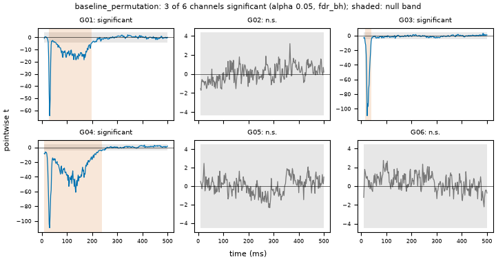

Note
Go to the end to download the full example code.
15: Is there a response?¶
Decide, for each channel, whether the brain answered at all, and for how long.
Introduction¶
Before measuring a bump, ask whether there is a bump to measure. Fitting a model to a
flat, noisy channel always returns some numbers, so a parameter on its own does not
prove a response exists. evoparam.existence answers the yes/no question with a test,
a p-value and an onset and offset, and it does it before and apart from the fit, so
the two decisions do not contaminate each other.
evoparam ships a registry of published rules (van Blooijs, Hays, Keller, Silverstein, F-TRACT) so you can run exactly the rule a paper used, next to evoparam’s own permutation test, and see where they agree.
# Import what we need
import warnings
import numpy as np
from evoparam import plots
from evoparam.existence import compare_detectors, list_rules, test_response
from evoparam.sim import simulate_ccep
The data¶
20 CCEP trials on 6 electrodes. About 60 % of the electrodes answer (p_response=0.6);
the rest see only noise. We know which is which, which lets us read the test honestly.
trials, truth = simulate_ccep(
20, n_channels=6, p_response=0.6, artifact=False, layout="grid", sfreq=512.0, seed=0,
) # fmt: skip
print(trials)
<TrialSet | 20 trials × 6 channels × 768 times, -0.500 – 0.998 s, 512 Hz, uV, human, spes>
The test¶
test_response compares the response window (here 9 to 500 ms) to the pre-stimulus
baseline with a permutation test. For each channel it returns:
significant: the yes/no verdict, after correcting for testing many channels;p_value: how surprising the response is under the null of no response;onsetandoffset: when the response starts and ends, in seconds;snr_db: the size of the response over the baseline, in decibels.
The correction (fdr_bh by default) controls the share of false positives across the
channels, so testing 4 channels or 400 does not flood you with chance hits.
with warnings.catch_warnings():
warnings.simplefilter("ignore")
test = test_response(trials, window=(0.009, 0.5), n_permutations=1000, random_state=0)
for channel in range(trials.n_channels):
name = trials.ch_info["name"][channel]
verdict = "response" if test.significant[channel] else "no response"
onset = test.onset[channel]
detail = ""
if np.isfinite(onset):
detail = f"onset {1000 * onset:.0f} ms, {test.snr_db[channel]:.1f} dB"
print(f" {name}: {verdict:<12} p={test.p_value[channel]:.3g} {detail}")
G01: response p=3.46e-38 onset 27 ms, 21.4 dB
G02: no response p=0.629
G03: response p=3e-300 onset 16 ms, 25.5 dB
G04: response p=3e-300 onset 10 ms, 29.4 dB
G05: no response p=0.952
G06: no response p=0.939
The channels the simulator made responsive come back significant, with an onset near the N1 and a positive SNR; the noise channels get a high p-value and no onset. The figure shows, per channel, the response curve against the band the baseline alone would fill; the response leaves that band exactly where the test marks it significant.
fig = plots.plot_existence(test)

How long does the response last?¶
The offset minus the onset is the duration of the response: how long the
signal stays out of the baseline band. It separates a short early N1 from a response
that runs on into the N2 and beyond. response_duration is the same measurement when
you only want the timing.
for channel in range(trials.n_channels):
if test.significant[channel]:
name = trials.ch_info["name"][channel]
print(f" {name}: {1000 * test.duration[channel]:.0f} ms "
f"({1000 * test.onset[channel]:.0f} to {1000 * test.offset[channel]:.0f} ms)")
G01: 172 ms (27 to 199 ms)
G03: 23 ms (16 to 39 ms)
G04: 229 ms (10 to 238 ms)
Published rules, side by side¶
Reviewers often ask for the rule a specific paper used. list_rules is the registry;
each row is one published definition of “a response is present”, with its statistic, its
window and the paper it comes from.
rules = list_rules()
print(rules[["name", "statistic", "window", "source"]].to_string(index=False))
name statistic window source
vanblooijs2023 negative_peak_over_sd [0.009, 0.1] van Blooijs et al. 2023, Nat Neurosci (ds004080)
vanblooijs2023_code negative_peak_over_sd [0.009, 0.1] van Blooijs et al. 2023, Nat Neurosci (ds004080); code: mnl_ccepAge ccep_detect_n1peak_ECoG.m
hays2021 negative_peak_z [0.01, 0.05] Hays et al. 2021
keller2014 abs_peak_z [0.0, 0.05] Keller et al. 2014, Brain
silverstein2020 negative_peak_z [0.01, 0.05] Silverstein et al. 2020
ftract abs_peak_z_bandpass [0.0, 0.8] Lemarechal et al. 2022, Brain (F-TRACT); Trebaul et al. 2018
prime2020 rms_z [0.01, 0.1] Prime et al. 2020
compare_detectors runs several rules on the same data and lines up their verdicts,
channel by channel. Here we put evoparam’s permutation test next to the van Blooijs 2023
rule as its published code reads it. Agreement across rules is a strong sign; a channel
where they disagree is one to look at by eye.
with warnings.catch_warnings():
warnings.simplefilter("ignore")
agreement = compare_detectors(
trials,
rules=("baseline_permutation", "vanblooijs2023_code"),
n_permutations=1000,
random_state=0,
)
agreement.insert(0, "channel", list(trials.ch_info["name"]))
print(agreement.to_string(index=False))
channel baseline_permutation vanblooijs2023_code
G01 True True
G02 False False
G03 True True
G04 True True
G05 False False
G06 False False
Conclusion¶
The existence test is the gate before the fit: it says which channels answered, when the
answer started and stopped, and how strong it was, with a p-value you can report and a
correction for the number of channels. Run a published rule from the registry when a
paper or a reviewer asks for one, and compare_detectors to show your test agrees with
it. Tutorial 08’s run_pipeline already runs the test in the chain; here we saw what
it decides and how to read it.
Total running time of the script: (0 minutes 0.617 seconds)